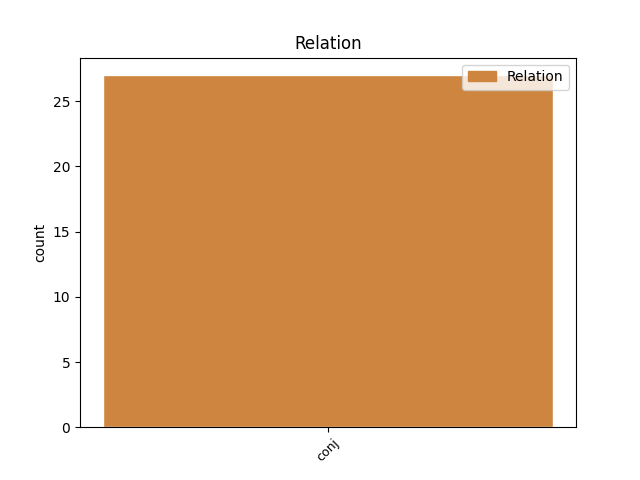

Distribution of features within this leaf

Agreement Rules sorted by frequency.
- When the dependent token is the conjunct(conj) of the head token, and the head token is AUX and the dependent token is AUX.
1 ה _ _ _ _ 0 _ _ _
2 סיוע _ _ _ _ 0 _ _ _
3 ל _ _ _ _ 0 _ _ _
4 ה_ _ _ _ _ 0 _ _ _
5 סטודנט _ _ _ _ 0 _ _ _
6 צריך צריך AUX AUX Gender=Masc|Number=Sing|Person=1,2,3|VerbType=Mod 0 _ _ _
7 להיות _ _ _ _ 0 _ _ _
8 ישיר _ _ _ _ 0 _ _ _
9 ו _ _ _ _ 0 _ _ _
10 נפרד _ _ _ _ 0 _ _ _
11 לחלוטין _ _ _ _ 0 _ _ _
12 מ _ _ _ _ 0 _ _ _
13 ה _ _ _ _ 0 _ _ _
14 סיוע _ _ _ _ 0 _ _ _
15 ל _ _ _ _ 0 _ _ _
16 ה_ _ _ _ _ 0 _ _ _
17 אוניברסיטה _ _ _ _ 0 _ _ _
18 , _ _ _ _ 0 _ _ _
19 ו _ _ _ _ 0 _ _ _
20 הוא _ _ _ _ 0 _ _ _
21 צריך צריך AUX AUX Gender=Masc|Number=Sing|Person=1,2,3|VerbType=Mod 6 conj _ _
22 להינתן _ _ _ _ 0 _ _ _
23 ל _ _ _ _ 0 _ _ _
24 כל _ _ _ _ 0 _ _ _
25 ציבור _ _ _ _ 0 _ _ _
26 ה _ _ _ _ 0 _ _ _
27 סטודנטים _ _ _ _ 0 _ _ _
28 ב _ _ _ _ 0 _ _ _
29 ה_ _ _ _ _ 0 _ _ _
30 ארץ _ _ _ _ 0 _ _ _
31 , _ _ _ _ 0 _ _ _
32 בלי _ _ _ _ 0 _ _ _
33 שים _ _ _ _ 0 _ _ _
34 לב _ _ _ _ 0 _ _ _
35 ל _ _ _ _ 0 _ _ _
36 ה_ _ _ _ _ 0 _ _ _
37 מוסד _ _ _ _ 0 _ _ _
38 ב_ _ _ _ _ 0 _ _ _
39 _הוא _ _ _ _ 0 _ _ _
40 הם _ _ _ _ 0 _ _ _
41 לומדים _ _ _ _ 0 _ _ _
42 . _ _ _ _ 0 _ _ _
Disagree Examples:
1 בוא_ _ _ _ _ 0 _ _ _
2 _של_ _ _ _ _ 0 _ _ _
3 _הם _ _ _ _ 0 _ _ _
4 של _ _ _ _ 0 _ _ _
5 עולים _ _ _ _ 0 _ _ _
6 רבים _ _ _ _ 0 _ _ _
7 הוא הוא AUX AUX Gender=Masc|Number=Sing|Person=3|Polarity=Pos|VerbForm=Part|VerbType=Cop 0 _ _ _
8 ברכה _ _ _ _ 0 _ _ _
9 ל _ _ _ _ 0 _ _ _
10 ה_ _ _ _ _ 0 _ _ _
11 מדינה _ _ _ _ 0 _ _ _
12 , _ _ _ _ 0 _ _ _
13 אך _ _ _ _ 0 _ _ _
14 הפניה_ _ _ _ _ 0 _ _ _
15 _של_ _ _ _ _ 0 _ _ _
16 _הם _ _ _ _ 0 _ _ _
17 ה _ _ _ _ 0 _ _ _
18 ישירה _ _ _ _ 0 _ _ _
19 ל _ _ _ _ 0 _ _ _
20 עיירות _ _ _ _ 0 _ _ _
21 ה _ _ _ _ 0 _ _ _
22 פיתוח _ _ _ _ 0 _ _ _
23 , _ _ _ _ 0 _ _ _
24 כפי _ _ _ _ 0 _ _ _
25 ש _ _ _ _ 0 _ _ _
26 הן _ _ _ _ 0 _ _ _
27 , _ _ _ _ 0 _ _ _
28 עלולה עלול AUX AUX Gender=Fem|Number=Sing|Person=1,2,3|VerbType=Mod 7 conj _ _
29 להיות _ _ _ _ 0 _ _ _
30 שוב _ _ _ _ 0 _ _ _
31 בכייה _ _ _ _ 0 _ _ _
32 ל _ _ _ _ 0 _ _ _
33 דורות _ _ _ _ 0 _ _ _
34 . _ _ _ _ 0 _ _ _
1 הן _ _ _ _ 0 _ _ _
2 היו _ _ _ _ 0 _ _ _
3 זכאיות זכאי AUX AUX Gender=Fem|Number=Plur|Person=1,2,3|VerbType=Mod 0 _ _ _
4 ל _ _ _ _ 0 _ _ _
5 מיניות_ _ _ _ _ 0 _ _ _
6 _של_ _ _ _ _ 0 _ _ _
7 _הן _ _ _ _ 0 _ _ _
8 , _ _ _ _ 0 _ _ _
9 ו _ _ _ _ 0 _ _ _
10 " _ _ _ _ 0 _ _ _
11 לאחר _ _ _ _ 0 _ _ _
12 גירושין _ _ _ _ 0 _ _ _
13 לא _ _ _ _ 0 _ _ _
14 היו היה AUX AUX Gender=Fem,Masc|Number=Plur|Person=3|Polarity=Pos|Tense=Past|VerbType=Cop 3 conj _ _
15 אמורות _ _ _ _ 0 _ _ _
16 להיות _ _ _ _ 0 _ _ _
17 מושלכות _ _ _ _ 0 _ _ _
18 מ _ _ _ _ 0 _ _ _
19 ה _ _ _ _ 0 _ _ _
20 בית _ _ _ _ 0 _ _ _
21 ללא _ _ _ _ 0 _ _ _
22 כל _ _ _ _ 0 _ _ _
23 תמיכה _ _ _ _ 0 _ _ _
24 פיננסית _ _ _ _ 0 _ _ _
25 " _ _ _ _ 0 _ _ _
26 , _ _ _ _ 0 _ _ _
27 כותבת _ _ _ _ 0 _ _ _
28 מינאי _ _ _ _ 0 _ _ _
29 . _ _ _ _ 0 _ _ _
1 ה _ _ _ _ 0 _ _ _
2 מכירה _ _ _ _ 0 _ _ _
3 , _ _ _ _ 0 _ _ _
4 ש _ _ _ _ 0 _ _ _
5 תוכננה _ _ _ _ 0 _ _ _
6 במשך _ _ _ _ 0 _ _ _
7 חודשים _ _ _ _ 0 _ _ _
8 לפני _ _ _ _ 0 _ _ _
9 ה _ _ _ _ 0 _ _ _
10 פלישה _ _ _ _ 0 _ _ _
11 של _ _ _ _ 0 _ _ _
12 עיראק _ _ _ _ 0 _ _ _
13 ל _ _ _ _ 0 _ _ _
14 כוויית _ _ _ _ 0 _ _ _
15 , _ _ _ _ 0 _ _ _
16 לא _ _ _ _ 0 _ _ _
17 היתה _ _ _ _ 0 _ _ _
18 יכולה יכול AUX AUX Gender=Fem|Number=Sing|Person=1,2,3|VerbForm=Part|VerbType=Mod 0 _ _ _
19 להתקיים _ _ _ _ 0 _ _ _
20 ב _ _ _ _ 0 _ _ _
21 נסיבות _ _ _ _ 0 _ _ _
22 פחות _ _ _ _ 0 _ _ _
23 נוחות _ _ _ _ 0 _ _ _
24 , _ _ _ _ 0 _ _ _
25 ו _ _ _ _ 0 _ _ _
26 היתה היה AUX AUX Gender=Fem|Number=Sing|Person=3|Polarity=Pos|Tense=Past|VerbType=Cop 18 conj _ _
27 עלולה _ _ _ _ 0 _ _ _
28 להיכשל _ _ _ _ 0 _ _ _
29 . _ _ _ _ 0 _ _ _
1 וולסטון _ _ _ _ 0 _ _ _
2 הוסיף _ _ _ _ 0 _ _ _
3 : _ _ _ _ 0 _ _ _
4 " _ _ _ _ 0 _ _ _
5 ב _ _ _ _ 0 _ _ _
6 אותה _ _ _ _ 0 _ _ _
7 מידה _ _ _ _ 0 _ _ _
8 , _ _ _ _ 0 _ _ _
9 מתוך _ _ _ _ 0 _ _ _
10 אהבת _ _ _ _ 0 _ _ _
11 ישראל _ _ _ _ 0 _ _ _
12 , _ _ _ _ 0 _ _ _
13 יכול _ AUX AUX Gender=Masc|Number=Sing|Person=1,2,3|VerbForm=Part|VerbType=Mod 0 _ _ _
14 אדם _ _ _ _ 0 _ _ _
15 להיות _ _ _ _ 0 _ _ _
16 ביקורתי _ _ _ _ 0 _ _ _
17 כלפי _ _ _ _ 0 _ _ _
18 ממשלה _ _ _ _ 0 _ _ _
19 מסוימת _ _ _ _ 0 _ _ _
20 ו _ _ _ _ 0 _ _ _
21 אני _ _ _ _ 0 _ _ _
22 אמנם _ _ _ _ 0 _ _ _
23 הייתי היה AUX AUX Gender=Fem,Masc|Number=Sing|Person=1|Polarity=Pos|Tense=Past|VerbType=Cop 13 conj _ _
24 ביקורתי _ _ _ _ 0 _ _ _
25 על _ _ _ _ 0 _ _ _
26 מפלגת _ _ _ _ 0 _ _ _
27 ה _ _ _ _ 0 _ _ _
28 ליכוד _ _ _ _ 0 _ _ _
29 ב _ _ _ _ 0 _ _ _
30 ישראל _ _ _ _ 0 _ _ _
31 , _ _ _ _ 0 _ _ _
32 ש _ _ _ _ 0 _ _ _
33 אותו_ _ _ _ _ 0 _ _ _
34 _היא _ _ _ _ 0 _ _ _
35 אני _ _ _ _ 0 _ _ _
36 חושב _ _ _ _ 0 _ _ _
37 ל _ _ _ _ 0 _ _ _
38 ממשלה _ _ _ _ 0 _ _ _
39 ימנית _ _ _ _ 0 _ _ _
40 . _ _ _ _ 0 _ _ _